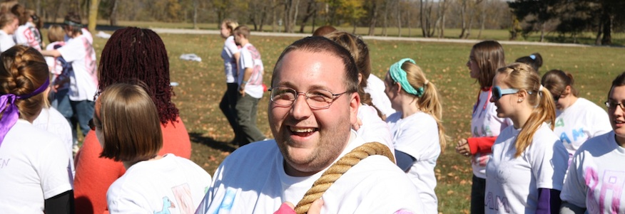

Events
We do lots of fun things together!
Fall Getaway
Every year in the Fall our campuses take a weekend to connect, meet the new students, and deepen our relationships with God. These retreats are a great chance to getaway, experience nature, and have a blast with other college students. This year, the 2011 Fall Getaway will be together with all the h2o Ohio schools. Hundreds of students from all over Ohio will gather at Heartland Camp on October 21 and 22 for our biggest event of the year! We hope you can come. Check out our local links for more details and how to register.